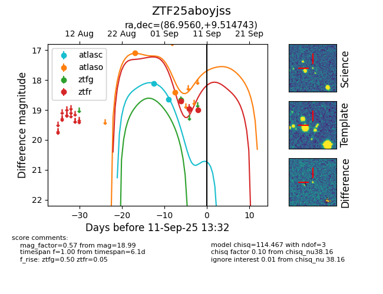

FINK: ZTF25aboyjss
Lasair: ZTF25aboyjss
ALeRCE: ZTF25aboyjss
ZTF25aboyjss (ztf,fink)
equatorial (ra, dec) = (86.9560,+9.51474)
galactic (l, b) = (197.0230,-9.50552)

last atlasc=18.65, atlaso=19.14, ztfg=19.85, ztfr=19.43
2 atlasc, 3 atlaso, 2 ztfg, 4 ztfr detections